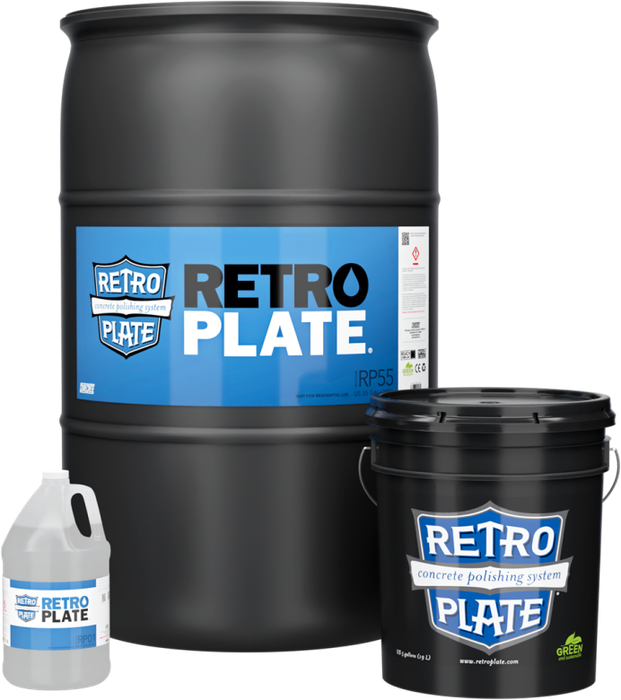
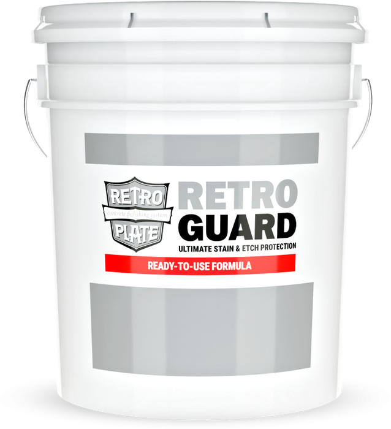
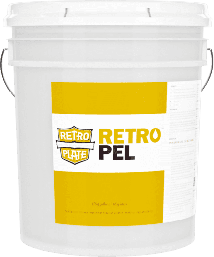

Verdichten und Polieren
RetroPlate
Das System für geschliffene und polierte Betonböden. Für neuen Beton genauso wie für ältere Flächen, die wieder gut aussehen sollen.
Mehr erfahrenFleck- und Säureschutz Schützen
RetroGuard ist ein gebrauchsfertiger Schutz für verdichtete und polierte Böden. Wenn etwas verschüttet wird, hält die Schutzschicht die Flüssigkeit zurück und verschafft Zeit, bevor ein Fleck bleibt.

Vor dem Auftragen wird der Boden gründlich gereinigt, am besten mit CreteClean Plus. Schmutz, Öl, Fett, Wachse und alte Versiegelungen müssen vollständig entfernt sein.
Danach wird RetroGuard dünn aufgetragen. Eine kleine Probefläche vorab zeigt, ob Optik und Ergebnis zum Boden passen.
Die wichtigsten Werte im Überblick. Alle Angaben, Sicherheitshinweise und Prüfnormen stehen im Datenblatt.
RetroGuard eignet sich für alle mit Ashford Formula oder RetroPlate behandelten Böden, neu oder alt, grau oder farbig, sowie für Terrazzo.

Das System für geschliffene und polierte Betonböden. Für neuen Beton genauso wie für ältere Flächen, die wieder gut aussehen sollen.
Mehr erfahren
Macht Beton öl- und wasserabweisend. Verschüttetes perlt ab und lässt sich aufnehmen, bevor es einzieht.
Mehr erfahrenWir beraten Sie gern zu Ihrem Boden und stellen den Kontakt zum zertifizierten Fachbetrieb her.